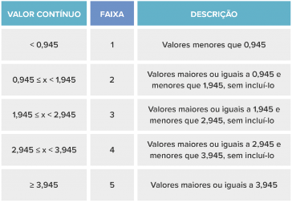

Foram retirados as seguintes bases de dados do INEP:
Indicadores de qualidade e seus respectivos anos:
O CPC é um indicador de qualidade que avalia os cursos de graduação. Seu cálculo e sua divulgação ocorrem no ano seguinte ao da realização do Enade, com base na avaliação de desempenho de estudantes, no valor agregado pelo processo formativo e em insumos referentes às condições de oferta – corpo docente, infraestrutura e recursos didático-pedagógicos.
Ano dos dados utilizados: 2019
Mais informaçõesO IGC é um indicador de qualidade que avalia as instituições de educação superior. Seu cálculo é realizado anualmente e leva em conta os seguintes aspectos:
Ano dos dados utilizados: 2019
Mais informaçõesO IDD é um indicador de qualidade que busca mensurar o valor agregado pelo curso ao desenvolvimento dos estudantes concluintes, considerando seus desempenhos no Enade e no Exame Nacional do Ensino Médio (Enem), como medida proxy (aproximação) das suas características de desenvolvimento ao ingressarem no curso de graduação avaliado. Para que um curso tenha o IDD calculado, é preciso que ele atenda às seguintes condições:
Ano dos dados utilizados: 2019
Mais informaçõesO Exame Nacional de Desempenho dos Estudantes (Enade) avalia o rendimento dos concluintes dos cursos de graduação em relação aos conteúdos programáticos previstos nas diretrizes curriculares dos cursos, o desenvolvimento de competências e habilidades necessárias ao aprofundamento da formação geral e profissional, e o nível de atualização dos estudantes com relação à realidade brasileira e mundial.
Ano dos dados utilizados: 2019
Mais informaçõesO Censo da Educação Superior, realizado anualmente pelo Inep, é o instrumento de pesquisa mais completo do Brasil sobre as instituições de educação superior (IES) que ofertam cursos de graduação e sequenciais de formação específica, além de seus alunos e docentes.
Mais informaçõesAno dos dados utilizados: 2020
Obs¹: Os dados apresentados são os mais recentes disponibilizados no portal de dados abertos do INEP, órgão divulgador desses dados.
Obs²: Alguns dados podem estar ausentes pois nem todos os cursos são avaliados todos os anos. Lista dos ciclos avaliativos do ENADE
Tabela de referência entre Contínuo e Faixa, definida pelo próprio INEP:
